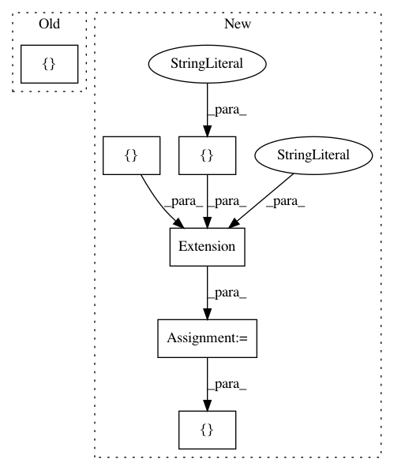

0d913496e2d5900745ba22786d95f352dc8b523c,setup.py,,,#,119
Before Change
},
description = "interactive 2-dimensional plotting",
long_description = open("README.rst").read(),
ext_modules = [contour, cython_speedups],
include_package_data = True,
install_requires = __requires__,
license = "BSD",
After Change
include_dirs=[numpy_include_dir],
)
downsampling_lttb = Extension(
"chaco.downsample._lttb",
sources=["chaco/downsample/_lttb.c"],
include_dirs=[numpy_include_dir],
)
// Commenting this out for now, until we get the module fully tested and
// working
//speedups = Extension(
// "chaco._speedups",
// sources = ["chaco/_speedups.cpp"],
// include_dirs = [get_include()],
// define_macros=[("NUMPY", None)],
//)
setup(
name = "chaco",
version = __version__,
author = "Peter Wang, et. al.",
author_email = "info@enthought.com",
maintainer = "ETS Developers",
maintainer_email = "enthought-dev@enthought.com",
url = "http://docs.enthought.com/chaco",
download_url = "https://github.com/enthought/chaco",
classifiers = [c.strip() for c in \
Development Status :: 5 - Production/Stable
Intended Audience :: Developers
Intended Audience :: Science/Research
License :: OSI Approved :: BSD License
Operating System :: MacOS
Operating System :: Microsoft :: Windows
Operating System :: OS Independent
Operating System :: POSIX
Operating System :: Unix
Programming Language :: C
Programming Language :: Python
Topic :: Scientific/Engineering
Topic :: Software Development
Topic :: Software Development :: Libraries
.splitlines() if len(c.strip()) > 0],
package_data={
"chaco": ["tools/toolbars/images/*.png",
"layers/data/*.svg",
"tests/data/PngSuite/*.png"]
},
description = "interactive 2-dimensional plotting",
long_description = open("README.rst").read(),
ext_modules = [contour, cython_speedups, downsampling_lttb],
include_package_data = True,
install_requires = __requires__,
license = "BSD",
In pattern: SUPERPATTERN
Frequency: 4
Non-data size: 6
Instances
Project Name: enthought/chaco
Commit Name: 0d913496e2d5900745ba22786d95f352dc8b523c
Time: 2016-10-18
Author: cwebster@enthought.com
File Name: setup.py
Class Name:
Method Name:
Project Name: markovmodel/PyEMMA
Commit Name: e8112664a28b00bb68c4b29bff1a187dadf6af83
Time: 2016-12-06
Author: m.scherer@fu-berlin.de
File Name: setup.py
Class Name:
Method Name: extensions
Project Name: PyMVPA/PyMVPA
Commit Name: 4df382adea737979216266f63b9e11f93a0601fe
Time: 2008-03-01
Author: psederberg@gmail.com
File Name: setup.py
Class Name:
Method Name:
Project Name: enthought/chaco
Commit Name: 89d09e5bdcef7b225575988dcbc8732518318c87
Time: 2012-02-07
Author: cfarrow@enthought.com
File Name: setup.py
Class Name:
Method Name: